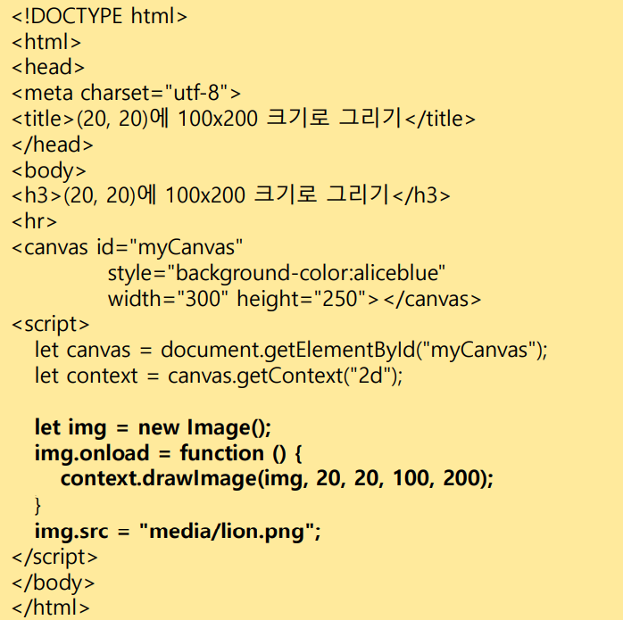

BOM 객체
BOM 객체: 자바스크립트로 브라우저를 제어하기 위해 지원되는 객체들
브라우저 공통 BOM 객체들
- window : 브라우저 윈도우 모양 제어. 새 윈도우 열기/닫기
- navigator : 브라우저에 대한 다양한 정보 제공
- history - 브라우저 윈도우에 로드한 URL 리스트의 히스토리 관리
- location : 브라우저 윈도우에 로드된 HTML 페이지의 URL 관리
- screen : 브라우저가 실행되고 있는 스크린 장치에 대한 정보 제공
window 객체
윈도우 모양과 window 객체의 프로퍼티
윈도우 열기
3가지 방법이 있다. 그 중에서 간단하게 window.open() 을 사용할 수 있음
사용 예시) window.open("http://www.naver.com", "", "");
윈도우 이름 : _blank, _parent, _self, _top
window.open() 으로 윈도우 열기
엘비스 프레슬리 홈 페이지
유니버셜 올랜드 홈 페이지
디즈니랜드 홈 페이지
window 객체의 타이머 활용
타임아웃 코드 1회 호출 : setTimeout()/clearTimeout() 메소드
타임아웃 코드 반복 호출 : setInterval()/clearInterval() 메소드
윈도우의 위치와 크기 조절
보안상의 이유로 정상적인 실행이 되지 않을 수 있음
웹 페이지 스크롤
현재 이 페이지에는 이미 웹 페이지 스크롤이 적용됨
웹 페이지 프린트
window.print(); 코드가 실행되면,
인쇄 다이얼로그가 열리게 된다.
onbeforeprint 와 onafterprint
onbeforeprint 라는 리스너와, onafterprint 라는 리스너를 제공함
onbeforeprint : print를 실행시키자마자 (프린트 이전)
onafterprint : print가 모두 끝날 때
location 객체
사용 예시 ) window,location = "http://www.naver.com";
새 윈도우에 웹 페이지 열기)
let win = window.open();
win.location="http://www.naver.com";
navigator 객체
현재 작동중인 브라우저에 대한 다양한 정보를 나타내는 객체
screen 객체
브라우저가 실행되는 스크린 장치에 관한 정보를 담고있는 객체
| 프로퍼티 | 설명 |
| availHeight | 작업 표시줄 등을 제외하고 브라우저가 출력 가능한 영역의 높이 |
| availWidth | 작업 표시줄 등을 제외하고 브라우저가 출력 가능한 영역의 폭 |
| pixelDepth | 한 픽셀의 색을 나타내기 위해 사용되는 비트 수 |
| colorDepth | pixelDepth와 동일, 대부분의 브라우저에서 지원되므로 더 좋음 |
| height | 스크린의 수직 픽셀 수 |
| width | 스크린의 수평 픽셀 수 |
history 객체
윈도우에서 방문한 웹 페이지 리스트(히스토리)를 나타내는 객체
사용 예시)
canvas 태그
웹 페이지에 캔버스 영역 만들기
캔버스 만들기
canvas 객체 다루기
삼각형 그리기
beginPath() : 새로운 경로시작
closePath() : 경로의 마지막 점과 시작점을 연결하는 직선 추가
closePath() 를 이용하여 같은 동작을 해보았다.
원호 그리기
원호를 그리는 arc() 메소드를 이용한다.
각도는 3시방향부터 시작한다.
각도는 원주율로 표현한다.
예시)
원호 그리기 실습

캔버스 지우기
캔버스에 그려진 것을 모두 지울 때 (경로는 지워지지 않음)
context.clearRect(0, 0, canvas.width, canvas.height);
경로를 포함하여 지울 때
context.clearRect(0, 0, canvas.width, canvas.height);
context.beginPath();
도형 꾸미기
선 색깔
context.strokeStyle = "blue";
색 채우기
context.fillStyle = "red";
선 굵기
context.lineWidth = 20;
경로에 갇힌 도형 칠하기
context.fill();
지정된 색으로 캔버스에 바로 색을 채우기
context.fillRect(20, 20, 100, 100);
텍스트 그리기
폰트 설정
context.font = "50px arial";
정렬 설정
context.textAlign ="center";
텍스트 외곽선 그리기
context.strokeText("Javascript", 30, 100);
텍스트 채워 그리기
context.fillText("Javascript", 30, 200);
이미지 그리기
캔버스의 (20, 20에 100x200 크기로 변형하기 그리기)

canvas 객체와 마우스 이벤트 활용
마우스 드래깅으로 캔버스에 그림 그리기

열기